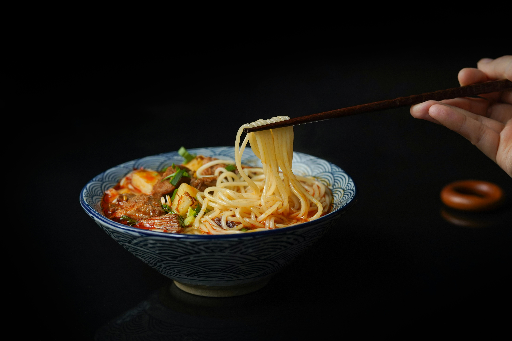

Creamy coconut miso ramen
Home

Descriptions
This dish is perfect if you're short on time and effort
This soupy delicious noodle is perfect for those looking
to eat healthy.
Ingredients
For the broth
- 1 tbsp seasme oil
- 4 spring onions, chopped
- 1 tbsp chopped coriander stalks
- 2 cloves garlic, minced
- 1 inch ginger, minced
- 1.5 tbsp white miso paste
- 1 tbsp light soy sauce
- 1 vegan stock cube
- 6 dried shittake mushrooms
- 400ml waters
- 1/2 tin coconut milk
- juice of lime
For the tofu
- 200g extra firm tofu
- 1 tbsp dark soy suace
- 1 tbsp seasme oil
- 1.5 tbsp agave
To serve
- 200g dry noodles, cooked to package
instructions
- Pak choi
- Fresh coriander
- Extra fresh lime
- Chilli oil
Steps
- Preheat oven or airfryer to 180c
- Start by prepping your tofu, grate
on the thick setting of a grater and
place on a baking sheet with the remaining
ingredients.
- Bake or airfry for 12-18 minutes,
turning reguluary as this will catch quickly.
- Heat the seasme oil in a small saucepan
on medium heat before adding the spring onions,
coriander stalks, garlic and ginger and fry for
5 minutes.
- Add the remaining indgredients to the pan along with
however much water you like, reduce to low heat
and leave to simmer for 10 minutes.
- Once this has finished simmering add the lime.
- Split the broth between two bowls, add your
noodles, veggies of choise and garnish with tofu.